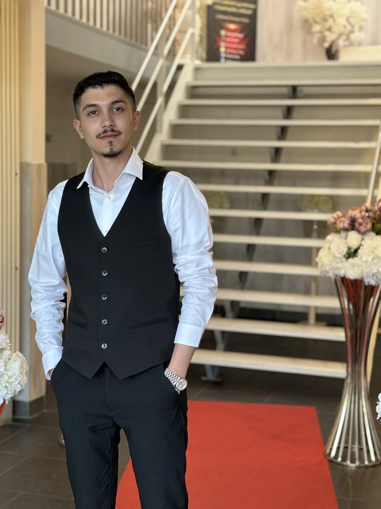

Developer focus
Ik werk graag aan applicaties waarin een nette interface en betrouwbare back-endlogica samenkomen.
Hallo, ik ben
MBO-4 Software Developer student met ervaring in C#, .NET, SQL en webontwikkeling. Ik bouw graag duidelijke, gebruiksvriendelijke oplossingen en blijf mezelf technisch ontwikkelen.

Ik werk graag aan applicaties waarin een nette interface en betrouwbare back-endlogica samenkomen.
Ik volg Software Development op MBO-niveau 4 en pas wat ik leer direct toe in school-, stage- en eigen projecten.
Mijn doel is om steeds beter te worden in C#, .NET en moderne webontwikkeling binnen een professioneel team.
Een live full-stack restaurantwebsite met 45 gerechten, categorieën, winkelmandje, afrekenen, accounts, bestelling volgen en een beheergedeelte. De applicatie draait online met PHP, MySQL en PDO.
Een live webapp waarin bezoekers games kunnen bekijken en zoeken op titel of genre. De applicatie gebruikt PHP, MySQL en PDO en bevat registratie, inloggen en databasefunctionaliteit.
Werk aan software en webfunctionaliteit tijdens mijn stage, met onder andere C#, SQL, Blazor en MudBlazor.
Een nieuwe versie van mijn portfolio met semantische HTML, responsive CSS en een dark/light mode.
Internationaal schoolproject waarin ICT, samenwerking en praktische installatie op meerdere scholen samenkwamen.
Tijdens mijn stage heb ik meegewerkt aan het verbeteren en versnellen van bestaande software en webapplicaties. Ik heb onder andere de database opnieuw ingericht en geoptimaliseerd, verschillende interfaces verbeterd en de prestaties van de website verhoogd. Daarnaast heb ik meerdere API’s gebouwd en gewerkt met moderne ontwikkelmethodes. Ik heb ook veel geleerd over softwarebeveiliging, waaronder het veilig opslaan van wachtwoorden met hashing, het beschermen van data en het schrijven van betrouwbaardere code. Verder heb ik ervaring opgedaan met unit testing, samenwerken via GitHub, branches en updates beheren, code van collega’s integreren en gezamenlijk werken aan een bestaand softwareproject. Technieken: C#, SQL, Blazor, MudBlazor, REST API’s, Git/GitHub, Unit Testing, Security & Hashing. Als je wilt, kan ik deze tekst ook nog iets korter en krachtiger maken, zodat hij beter past in een portfolio-kaart zonder dat het te veel tekst wordt.
Focus op software realiseren, plannen en ontwerpen, testen en verbeteren, databases en objectgeoriënteerd programmeren.
Communicatieondersteuning en culturele bemiddeling, met veel aandacht voor duidelijk communiceren en verantwoordelijkheid.
Begeleiden van activiteiten met kinderen en samenwerken tijdens verschillende georganiseerde momenten.
Wil je samenwerken of meer weten over mijn werk? Stuur mij gerust een bericht.